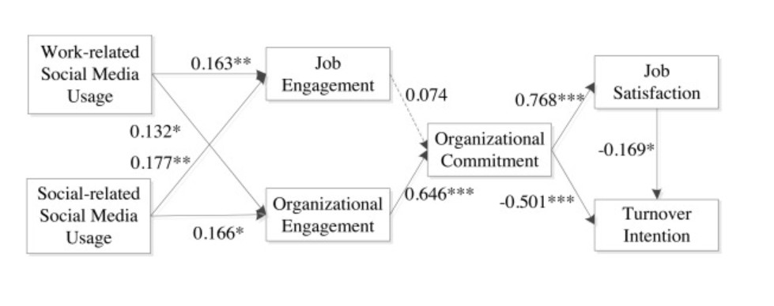

Social media has evolved to something beyond an app; it’s been built into our lives. It affects how students think, how they focus, and even how they see themselves. At first, platforms like Instagram and TikTok seemed amazing; they let people connect globally and show creativity in ways that were impossible before. But over time, it became clear that social media drains energy, focus, and motivation from students. It doesn’t just take away time; it takes away attention. The constant need to post, check, and reply turns into pressure. It hurts students’ mental health, shatters their focus on school, and disconnects them from what’s actually happening around them.
The Impossible Ideal and Mental Health Pressure
The problem isn’t screen time; it's the fact that social media forces students to constantly choose between their private life and their student self, an exhausting conflict to live in every day. It’s like carrying an invisible weight, one that students don’t even realize is there until it’s too late. The more students use social media, the more they feel the need to be idealized, to show perfect parts of their lives online. That kind of perfection is impossible, and it makes them feel constantly judged.
Academic Fallout and Dissonance
It’s not just emotional pressure; it’s academic, too. When students are trying to study or focus, their phone can pull them away in seconds. They can be sitting in a lecture hall, but mentally somewhere else, scrolling through notifications or checking if someone texted back. The ability to concentrate is like a muscle, and social media keeps weakening it by offering constant temptation. Notifications like comments and messages may seem small, but together they create an environment that pulls attention away from what really matters.
Studies have shown this clearly. According to Sun (2023), there is a direct link between social media use and feelings of social anxiety and loneliness. It’s a cruel paradox: students use these platforms to feel connected, but often end up feeling even more disconnected. The apps themselves are designed to keep people scrolling, reacting, and comparing. They are made for engagement; every single notification pulls users from the present moment. Instead of helping them connect, these devices divide their attention from work and life, and for students, it affects their ability to stay focused on academics.
Josephine (2016) calls this the “digital dissonance,” a painful separation between apps used for fun and apps used for school. It’s hard to keep them separate because, as Josephine found, social life feels like pleasure while schoolwork feels like pain.
When teachers started bringing social media into classrooms, the situation worsened. They introduced something meant for entertainment into a space meant for focus, creating constant clashes. It’s like trying to study in a room where everyone is talking.
Social media posts often pull focus away from learning, and although they may seem useful in classrooms, they usually bring more distraction than value. Social media also influences how students perceive themselves in academic settings. Memes and jokes about majors or grades, for example, may seem harmless, but they create stereotypes that shape how students view their own worth. One post or comment can stick in a student’s head longer than any positive feedback. Bermuda et al. (2023) found that small negative moments, like comparison or online judgment, stay in our minds longer than small positive ones, like receiving likes or compliments. Those repeated hits to self-esteem make students feel insecure about their studies and their school place.
The Potential Cure: Technology as the Solution
At the same time, social media helps people connect broadly, though not always deeply. It makes it easy to reach a hundred people, but those connections can feel shallow. What once felt like a bond starts feeling like a chore, as students check messages and stories not out of interest but out of habit. The good news, though, is that technology itself can be part of the solution. Sun (2023) found that mindfulness-based mobile apps can significantly reduce social anxiety and loneliness among students. This finding is huge because it proves the problem isn’t the screen; it’s the design.
Recognizing this potential of social media it can help students network in meaningful ways. Especially for students living in dorms, social media can be a lifeline to loved ones. It connects them with clubs, campus events, and communities. So the issue isn’t whether social media allows connection; it’s whether those app designs are healthy and allow connections that are fit and balanced without affecting the student's life.

Figure 1: PLS Structural Model
Conceptual model illustrating how work-related social media usage positively affects engagement and the consequential impact on academic focus.
Adapted from Sun, Yiyang. “Mindfulness Apps and Student Well-being in the Digital Age.”
When technology is made to encourage being present in reality instead of a counterproductive reaction and comparison, it can be a powerful support for students' mental health. It is not about getting rid of screens completely but about learning to use them in a better way. Students who do well in school and life do more than just control screen time. They take back their attention. Teachers can help too. Instead of using social media to keep students interested, they should help students focus on what is in front of them and give lessons that reduce distractions.
Conclusion: The Path Forward
Overall, social media has transformed what it means to be a student. It influences not just academic performance but also mental health and self-perception. The reason is clear: the way these applications are designed can lead to fatigue, anxiety, and weakened focus. As a result, we have a generation of students who are constantly connected online but rarely fully present in the real world.
Technology doesn’t have to be the enemy, though. When designed with mindfulness and purpose, it can actually help students reconnect with themselves and their goals. But until then, social media remains both the problem and the potential cure. The challenge for students now is to stop letting social media use them and start learning how to use it consciously so they can turn it from a source of stress into something that supports their learning and well-being.